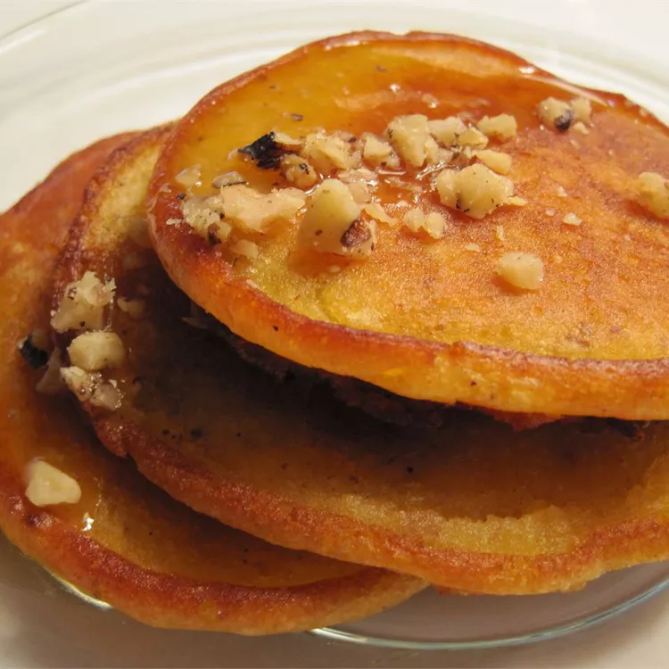

Pumpkin Pancakes

This basic pancake recipe turns into a delicious holiday breakfast simply by adding pumpkin and some fall spices!
Ingredients
- 2 cups all-purpose flour
- 2 tablespoons brown sugar
- 1 tablespoon white sugar
- 2 teaspoons baking powder
- 1 teaspoon baking soda
- ½ teaspoon salt
- 1 cup pumpkin puree
- 1 teaspoon ground cinnamon
- ½ teaspoon ground ginger
- ½ teaspoon ground allspice
- 1 egg
- 1 ½ cups milk
- 2 tablespoons vegetable oil
- 2 tablespoons lemon juice
- 2 teaspoons grated lemon zest
- 1 teaspoon vegetable oil
Directions
- Combine flour, brown sugar, white sugar, baking powder, baking soda, and salt in a large mixing bowl, and whisk together for two minutes to aerate.
- In a separate bowl, combine pumpkin puree, cinnamon, ginger, allspice, egg, milk, 2 tablespoons of vegetable oil, lemon juice, and lemon zest. Mix in the flour mixture, and stir just until moistened. (Do not overmix.)
- Coat skillet with 1 teaspoon vegetable oil over medium heat.
- Pour batter into skillet 1/4 cup at a time, and cook the pancakes until golden brown, about 3 minutes on each side.